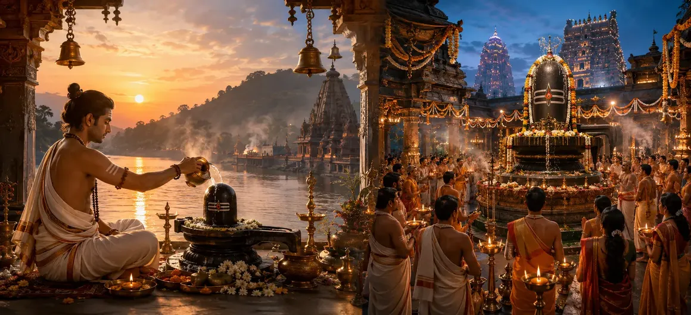

Nitya and Naimittika Rites
The fifty-sixth chapter of the Vayaviya Samhita outlines Nitya (daily) and Naimittika (occasional) rites, detailing the essential ritual obligations and spiritual duties for devoted worshippers of Lord Shiva.
Rishi Vayu explains how maintaining steadfast adherence to daily practices while duly performing occasional ceremonies purifies the mind and sustains spiritual momentum.
This chapter serves as a practical guide for daily spiritual living.
Chapter 56 Highlights
Nitya Worship
Essential daily spiritual duties and prayers.
Naimittika Rites
Occasional ceremonies for festivals and milestones.
Shiva Devotion
Sustaining constant remembrance of the Lord.
Purification
Daily cleansing and ritual offerings.
Japa & Meditation
Consistent mantra practice and inner contemplation.
Path Forward
Exploring compulsory and optional rites in Chapter 57.
Core Topics in This Chapter
- 01Definition and Importance of Nitya (Daily) Rites→
- 02Morning Ablutions and Pratyahika Prayers→
- 03Daily Worship of Lord Shiva (Nitya Puja)→
- 04Definition and Scope of Naimittika (Occasional) Rites→
- 05Observances During Festivals and Special Conjunctions→
- 06Spiritual Fruits of Regular Discipline→
- 07Transition to Chapter 57 (Compulsory and Optional Shaiva Rites)→
Definition and Importance of Nitya (Daily) Rites
Rishi Vayu explains that Nitya rites are obligatory daily duties that must be performed without omission by every serious spiritual practitioner.
These daily practices prevent the accumulation of spiritual inertia and keep the mind anchored in divine consciousness.
Morning Ablutions and Pratyahika Prayers
The day begins with early morning waking, cleansing rituals, bath, and mental recitation of sacred names of Lord Shiva.
These early acts set a serene and focused tone for all subsequent activities.
Daily Worship of Lord Shiva (Nitya Puja)
Nitya Puja involves offering water, bilva leaves, sandal paste, and incense to the Shiva Linga with deep devotion and mantra chanting.
Even a simple daily offering made with sincere love is immensely pleasing to the Lord.
Definition and Scope of Naimittika (Occasional) Rites
Naimittika rites are occasional ceremonies performed in response to specific events, lunar phases, festivals, or sacred astrological conjunctions.
These rites amplify spiritual growth and harness the potent energies of sacred times.
Observances During Festivals and Special Conjunctions
Special days such as Pradosha, Maha Shivaratri, and eclipses call for expanded worship, special fasts, and extended meditation.
Observing these occasions yields immense spiritual merit and grace.
Spiritual Fruits of Regular Discipline
Diligent adherence to Nitya and Naimittika duties cultivates mental stability, inner purity, and rapid spiritual evolution.
Discipline transforms routine actions into sacred yoga.
Transition to Chapter 57 (Compulsory and Optional Shaiva Rites)
Having detailed Nitya and Naimittika rites in Chapter 56, Rishi Vayu prepares to narrate Chapter 57, 'Compulsory and Optional Shaiva Rites'.
This next chapter will further distinguish between compulsory obligations and optional devotional acts.
Key Teachings of Chapter 56
Daily Duty
Unwavering commitment to Nitya worship.
Morning Cleansing
Bathing and purifying body and mind.
Bilva Offering
Daily devotion to the Shiva Linga.
Occasional Rites
Observing festivals and sacred conjunctions.
Spiritual Flow
Sustaining continuous divine connection.
Optional Prelude
Setting up compulsory and optional rites in Chapter 57.
Spiritual Reflection
Daily and occasional rites are the heartbeat of spiritual life, keeping the practitioner attuned to the eternal rhythm of Lord Shiva through disciplined devotion.
Living the Message of Chapter 56
Establish a consistent daily routine of prayer, meditation, and offering to sanctify your daily existence.
Honor sacred festival days with increased devotion and specialized observances.
Let discipline become your greatest ally on the path to liberation.
Key Spiritual Concepts
Obligatory daily ritual duties and worship.
Occasional ritual duties for specific auspicious times.
Daily spiritual practices and personal discipline.
Auspicious twilight worship of Lord Shiva.
Physical cleanliness and ritual purity protocols.
Uninterrupted daily meditation and communion.
Chapter Summary
Vayaviya Samhita Chapter 56 details Nitya (daily) and Naimittika (occasional) rites, emphasizing morning ablutions, daily worship of Lord Shiva, festival observances, and the spiritual fruits of regular discipline. This foundational chapter prepares the reader for Chapter 57, 'Compulsory and Optional Shaiva Rites'.
Frequently Asked Questions
1. What is the primary focus of Vayaviya Samhita Chapter 56?
Chapter 56 focuses on Nitya (daily) and Naimittika (occasional) rites, detailing the essential duties and spiritual obligations for devoted practitioners.
2. What is the difference between Nitya and Naimittika rites?
Nitya rites are performed daily without exception, whereas Naimittika rites are occasional rituals performed during specific festivals, conjunctions, or life milestones.
3. Who expounds these ritual duties to the sages?
Rishi Vayu details the protocols for daily and occasional worship to the gathered sages.
4. What is the next chapter for navigation after Chapter 56?
The next chapter for navigation is titled 'Compulsory and Optional Shaiva Rites'.
“Through the steady rhythm of daily duties and the joyous observance of occasional rites, the sincere devotee anchors their soul in the eternal grace of Lord Shiva.”
Continue Through Vayaviya Samhita
Chapter 56 concludes Nitya and Naimittika Rites. Continue to Compulsory and Optional Shaiva Rites.